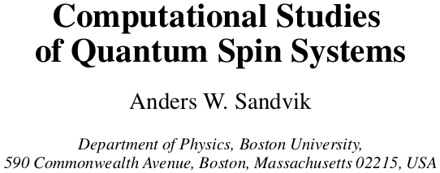
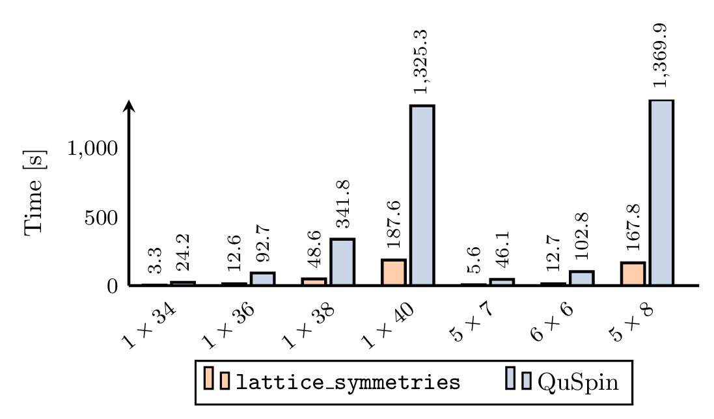

SpinED
User-friendly exact diagonalization package for quantum many-body systems.
Tom Westerhout
Contents
- Background
- Current state
- Extensions
Eigenvalue problems
- Definition:
\(H\psi_i = E_i\psi_i\),
where \(H: \mathcal{H} \to \mathcal{H}\), \(\psi_i \in \mathcal{H}\), \(E_i \in \mathbb{R}\), \(\dim \mathcal{H} \equiv D\). - For spin-1/2 systems \(D \sim 2^N \), where \(N\) is the number of sites.
- Dense representation (think
LAPACK):
\( \log_2\sqrt{\frac{250\text{G}}{2\cdot 16}} \sim \mathcal{O}(16) \). - Sparse representation (i.e. storing only \(H_{ij} \neq 0\)):
\( 16 \cdot N \cdot 2^N \sim 250G\), i.e. \(N \sim \mathcal{O}(29)\). - Implicit representation (i.e. storing an expression):
\( 16 \cdot 4 \cdot 2^N \sim 250G\), i.e. \(N \sim \mathcal{O}(32)\).
What if that is still not good enough?
Solution: symmetries!
arXiv:1101.3281
Example:
Suppose \([H, M] = 0\), then
\( 16 \cdot 4 \cdot \binom{N}{N/2} \sim 250G\), i.e. \(N \sim \mathcal{O}(35)\).
(remember, \(N\) was 32 on the previous slide)
Symmetries: general framework
Concepts:
- Suppose, we have operators \(\{T_k\}\) commuting with \(H\): \([H, T_k] = 0\).
- Symmetry group \(\mathcal{G}\) is generated by \(\{T_k\}\).
- Let \(\{|\sigma\rangle\}\) be \(\sigma^z\) product state basis,
i.e. \(|\sigma\rangle = |\sigma_1\sigma_2\dots\sigma_N\rangle,\; \sigma_i = \uparrow, \downarrow\). - Orbit: \(\mathtt{orbit}(\sigma) = \{g|\sigma\rangle | g \in \mathcal{G}\}\).
- Representative: \(\mathtt{repr}(\sigma) = |\tilde\sigma\rangle = \text{min}_\text{int} \mathtt{orbit}(\sigma)\).
Key assumption:
\(\mathcal{G}\) admits a one-dimensional representation,
i.e. \(T_k|0\rangle = \lambda_k|0\rangle, \;|\lambda_k| = 1\)
Example
Heisenberg model on 6 by 6 square lattice.
- \(T_1 =\) translation by 1 site;
- \(T_2 =\) rotation by 90°;
- ...
Note: the symmetry group is non-Abelian, \([T_1, T_2] \neq 0\). However, for the ground state we have $T_1|0\rangle = |0\rangle,\; T_2|0\rangle = |0\rangle$.
@group theory enthusiasts: extend this approach to 2-dimensional representations.
"Symmetrized" basis
- Original basis: \( |\sigma\rangle \);
- New basis: \[ |\mathcal{S}_{\tilde\sigma}\rangle = \frac{1}{\sqrt{N_{\tilde\sigma}}} \sum_{g\in\mathcal{G}} \lambda^*_g \cdot g|\tilde\sigma\rangle \;;\]
- Original Hamiltonian: \( H|\sigma\rangle = \sum_i c_i |\sigma_i\rangle \);
- New Hamiltonian: \[ H|\mathcal{S}_{\tilde\sigma}\rangle = \sum_i c_i \frac{\sqrt{N_{\tilde\sigma_i}}}{\sqrt{N_{\tilde\sigma}}} \lambda_{g_i} \cdot |\mathcal{S}_{\tilde\sigma_i}\rangle \;;\]
What can SpinED do?
Symmetries:
- \(U(1)\), i.e. magnetization/charge conservation;
- Global spin inversion, i.e. exchange all \(\uparrow\) and \(\downarrow\);
- Arbitrary permutations (e.g. translation, rotation, reflection, weird graph automorphisms);
- \(SU(2)\) + ED = trouble ☹️ hence not considered.
Operators:
\[ \begin{aligned} \hat O& = \sum_{i_1} A_{i_1} \sigma_{i_1} + \sum_{i_1, i_2} B_{i_1 i_2} \sigma_{i_1} \otimes \sigma_{i_2} + \sum_{i_1, i_2, i_3} C_{i_1 i_2 i_3} \sigma_{i_1} \otimes \sigma_{i_2} \otimes \sigma_{i_3} \\ &+ \sum_{i_1, i_2, i_3, i_4} D_{i_1 i_2 i_3 i_4} \sigma_{i_1} \otimes \sigma_{i_2} \otimes \sigma_{i_3} \otimes \sigma_{i_4} \;. \end{aligned} \]Other implementations
(Please, correct me if something is missing)
Pomerol: works with dense matrices ❌HPhi(fork ofSPINPACK): works with sparse matrices ❌
(and user interface is ugly).EDLib: works with sparse matrices ❌
and does not support permutations (❓).QuSpin: supports symmetries and matrix-free computations ✅,
but is very tightly coupled to Python and is (relatively) slow ❌.
Performance

- Basis construction for 42 spins:
QuSpinruns out of memory 😛,lattice_symmetriesworks. - Exact diagonalization for 36 spins: easy! For 42 spins — untested, but should work.
For fun: \( 8 \cdot 6 \cdot \binom{N}{N/2} / 500 \sim 250G\), i.e. \(N \sim \mathcal{O}(44)\).
Extensions
- Fermions ‼️ (new physics)
- Support for \(S \gt 1/2\) ❓ (new physics)
- Support for multi-node calculations❗️ (bigger systems)
- Sublattice coding techniques❓ (performance)
- GPU support❓ (performance)
Conclusions
- Arbitrary lattice symmetries;
- Up to 1-, 2-, 3-, and 4-point interaction terms;
- User-friendly (i.e. no previous ED experience required to use);
- Relatively high-performance;
Help wanted:
- Fermions;
- MPI;
- Sublattice-coding & GPU support;
More info:
- These slides:
https://twesterhout.github.com/spin-ed - Kernels:
https://github.com/twesterhout/lattice-symmetries - User interface:
https://github.com/twesterhout/spin-ed